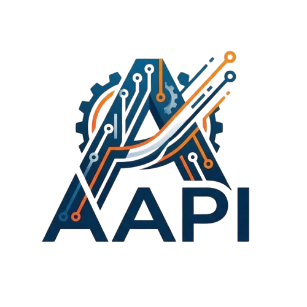

Automatización inteligente de procesos industriales
Prototipo web completamente funcional como prueba de concepto para el monitoreo de procesos industriales.
En futuros semestres se integrará JavaScript avanzado, conexión con sensores reales y bases de datos.